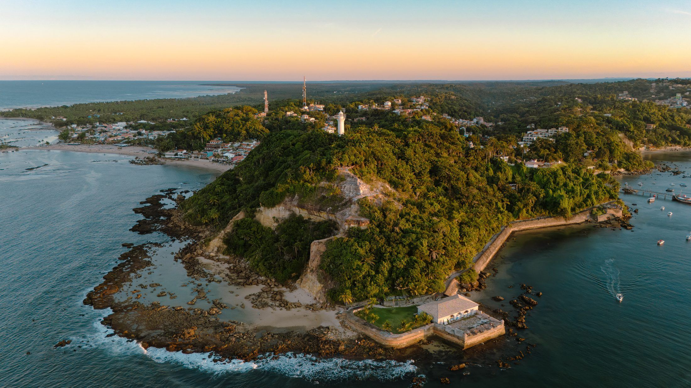
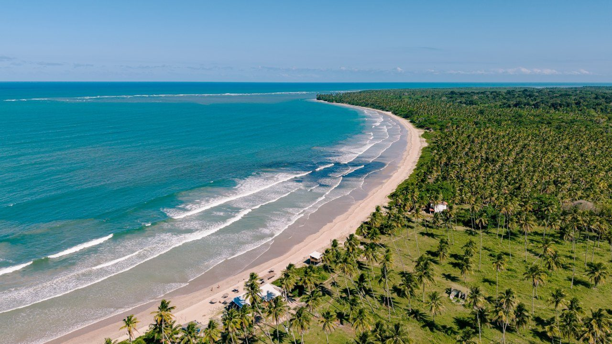
Cairu, um arquipélago, infinitas descobertas
BTM · Brazil Travel Market
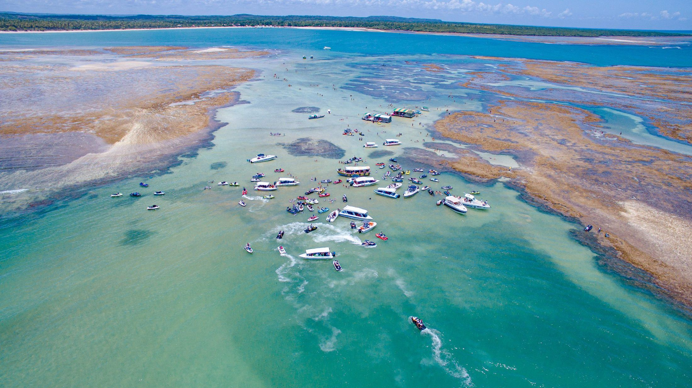
A dimensão do destino
Marítimo direto
As duas saem do Terminal Marítimo de Salvador, sem trechos por terra.
Semiterrestre
Travessia rápida de lancha até os terminais das duas ilhas.
Aéreo
Voos para pistas de pouso privativas.
Mapa esquemático, fora de escala
Perfil do visitante · Origem
Cairu.
Um arquipélago, infinitas descobertas.
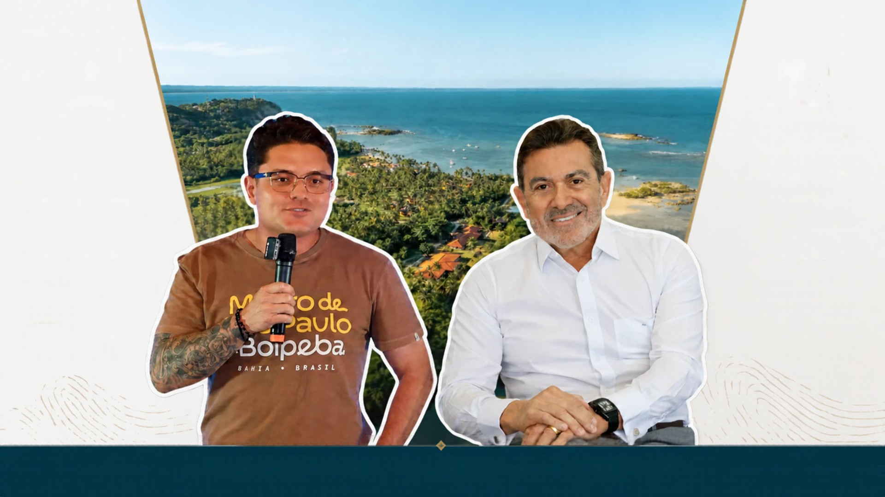
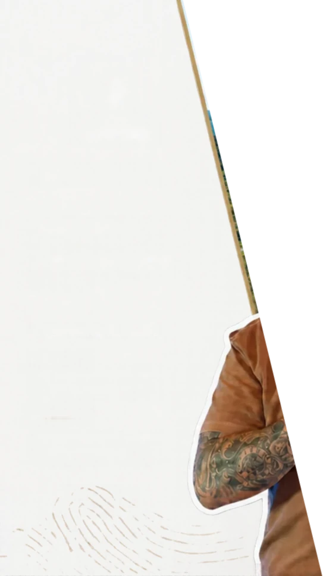
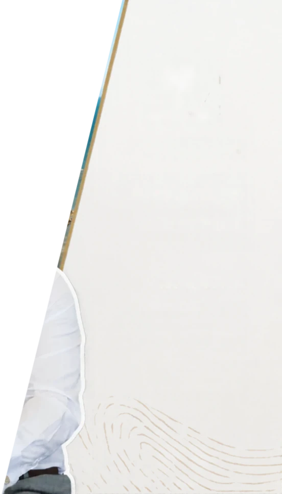
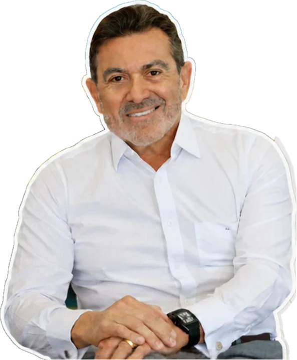
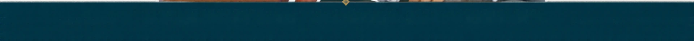
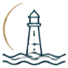
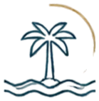
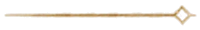
Perfil do visitante
Distribuição dos visitantes por faixa etária.
Pressione ← para voltar à última cena ou 1 para recomeçar.